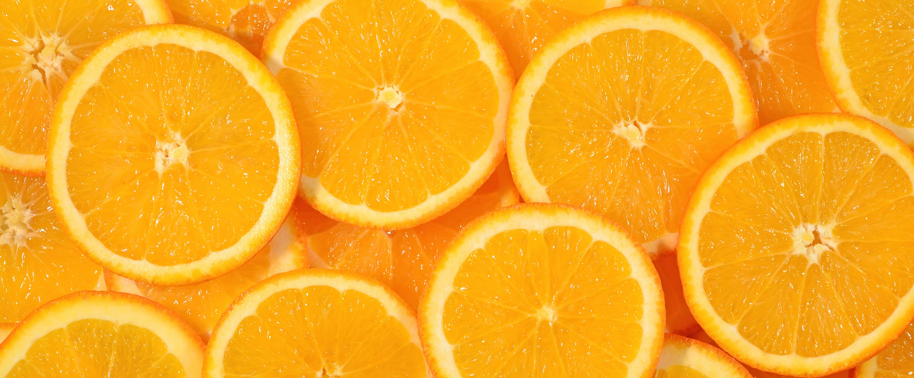
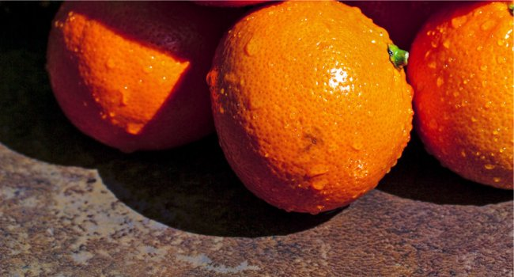

Varities of Orange

Common oranges
Common oranges (also called "white", "round", or "blond" oranges) contitute about two-thirds of all the orange production. The majority of this crop is used
mostly for juice extraction.[16][18]
Valencia
The Valencia orange is a late-season fruit, and therefore a popular variety when navel oranges are out of season. This is why an anthropomorphic orange was
chosen as the for the 1982 FIFA World Cup, held in Spain. The mascot was named Naranjito ("little orange") and wore the colors of the Spanish national football
team.
Hart's Tardiff Valencia
Thomas Rivers, an English nurseryman, imported this variety from the Azores Islands and catalogued it in 1865 under the Excelsior. Around 1870, he provided trees to S. B. Parsons, a Long Island
nurseryman, who in turn sold them to E. H. Hart of Federal Point, Florida.[35]
Hamlin
This cultivar was discovered by A. G. Hamlin near Glenwood, Florida, in 1879. The fruit is small, smooth, not highly colored, and juicy, with a pale yellow colored juice, especially in fruits that come from
lemon rootstock. The fruit may be seedless, or may contain a number of small seeds. The tree is high-yielding and cold-tolerant and it produces good quality fruit, which is harvested from October to December.
It thrives in humid subtropical climates. In cooler, more arid areas, the trees produce edible fruit, but too small for commercial use.[12]
Other varieties of common oranges
- Bali: grown in Bali, Indonesia. Larger than other orange
- Balledonna: grown in Italy
- Berna: grown mainly in Spain
- Biondo Comune ("ordinary blond"): widely grown in the Mediterranean basin, especially in North Africa, Egypt, Greece (where it is called "koines" ), Italy (where it is also known as "Liscio". and Spain;
it also called "Beledi" and "Nostrale",[16] in Italy, this variety ripens in December, earlier than the competing Tarocco variety[16]
- Biondo Riccio: grown in Italy
- Cadanera: a seedless orange of excellent flavor grown in Algeria, Morocco, and Spain; it begins to ripen in November and is known by a wide variety of trade names, such as Cadena Fina, Cadena sin
Jueso, Precoce de Valence ("early from Valencia"), Precoce des Canaries, and Valence san Penpins ("seedless Valencia");[16] it was first grown in Spain in 1870[37]
- Calabrese or Calabrese Ovale: grown in Italy
- Carvalhal: grown in Portugal
- Castellana: grown in Spain
- Cherry Orange: grown in southern China and Japan
- Clanor: grown in South Africa
- Dom João: grown in Portugal
- Fukuhara: grown in Japan
- Gardner: grown in Florida, this mid-season orange ripens around the beginning of Febuary; approximately the same time as the Midsweet variety; Gardner is about as hard as Sunstar and Midsweet[38]
- Homosassa: grown in Florida
- Jaffa orange: grown in the Middle East, also known as "Shamouti"
- Jincheng: the most popular orange in China
- Joppa: grown in South Africa and Texas
- Khettmali: grown in Israel and Lebanon
Go to top